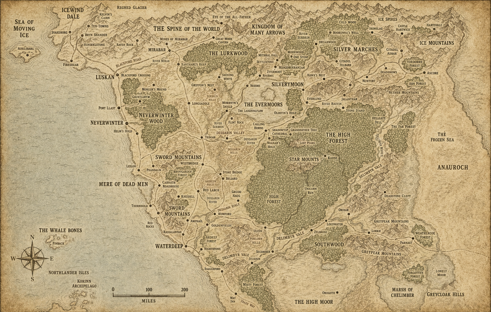

The Chart
A working chart of the Sword Coast. Mark not for scale.

Ardeep Forest Bryn Shandar Golden Fields Kryptgarden Forest Nightstone Silver Marches Silverymoon Spine of the World The True Hand Triboar WaterdeepAll Locations
- Ardeep ForestForest
- AthkatlaCity
- Bryn ShandarTown
- DarkarSettlement
- DarkhopeSettlement
- Deep Water InnTavern
- Eye of AnnamHoly site
- Golden FieldsTown
- HalruaaNation
- Kryptgarden ForestForest
- NightstoneVillage
- Pearl IslesIslands
- Silver MarchesRegion
- SilverymoonCity
- Spine of the WorldMountain range
- The True HandShip (wrecked)
- Trades WardDistrict
- TriboarTown
- WaterdeepCity
- Yawning PortalTavern